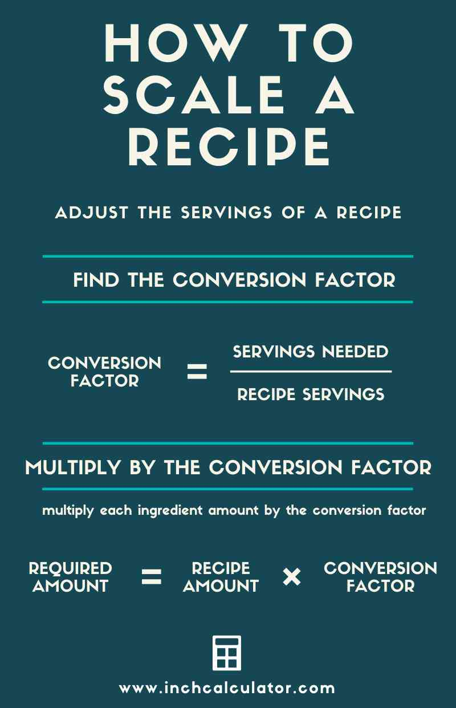

Have you ever doubled a cookie recipe and ended up with dry, crumbly discs that tasted like cardboard?
Or tripled a cake recipe and watched it overflow the pan, spill onto the oven floor, and fill your kitchen with the smell of burnt sugar and regret?
I have. More times than I want to admit.
The problem isn't you. The problem is that most people think scaling is just multiplication. Grab a calculator, multiply every ingredient by 2, and you're done. Right?
Wrong. So wrong.
Scaling by servings is simple—once you understand the rules. But those rules aren't obvious. Leavening doesn't scale linearly. Salt doesn't either. And equipment? Your oven doesn't magically grow just because you multiplied the recipe.
So let me walk you through the complete method. The one I use. The one I teach. The one that has saved me from countless kitchen disasters.
Step 1: Determine Your Original Yield and Desired Yield This sounds obvious. It's not.
Yield means the total amount the recipe produces. In the culinary world, "yield" is precise. It's measured in grams, ounces, cups, or number of servings.
But here's the trap: many recipes don't tell you the serving size. They'll say "serves 4" without telling you how much a serving actually is.
A serving of mac and cheese might be 1 cup (240g). A serving of lasagna might be 2 cups (480g). A serving of soup might be 1.5 cups (360g).
If you don't know the serving size, you can't scale accurately.
My rule: Before you scale any recipe, weigh the final dish. Divide by the number of servings. Now you know exactly what one serving looks like.
Example: You make a casserole that fills a 9x13 pan. The total weight is 2,400g (84.7oz). The recipe says "serves 8." That means each serving is 300g (10.6oz).
If you need to feed 20 people, you need 20 × 300g = 6,000g (211.6oz) of casserole.
That's your desired yield. Not "20 servings." 6,000 grams.
Always convert to weight first. Then scale.
Step 2: Calculate the Scaling Factor This is the easy part. The one that people actually do correctly.
Scaling factor = Desired yield ÷ Original yield
If your original recipe makes 4 servings and you need 10 servings: 10 ÷ 4 = 2.5
If your original recipe makes 8 servings and you need 50 servings: 50 ÷ 8 = 6.25
If your original recipe makes 12 cookies and you need 96 cookies: 96 ÷ 12 = 8
Write this number down. Circle it. Do not lose it.
Pro tip: Keep the scaling factor as a decimal, not a fraction. 2.5 is easier to multiply with than 5/2. Trust me.
Step 3: Multiply Most Ingredients by the Scaling Factor Here's where people go right. Flour, sugar, butter, milk, eggs (whole), oil, water—these all scale at 1:1.
For a 2.5x scaling factor:
280g flour × 2.5 = 700g
200g sugar × 2.5 = 500g
170g butter × 2.5 = 425g
3 eggs × 2.5 = 7.5 eggs (we'll come back to this)
The egg problem: You can't use half an egg. Round up. Use 8 eggs. Or weigh your eggs: one large egg is about 50g (1.8oz). 7.5 eggs = 375g. Crack eggs into a bowl, whisk, and measure out 375g.
Do not use half an egg. That way lies madness.
Step 4: Adjust Leavening (The Non‑Linear Stuff) Here's where people go wrong. Every single time.
Baking powder, baking soda, and yeast do NOT scale at 1:1.
I learned this the hard way. The wedding cake collapse. The baking soda cookies that tasted like soap. The bread that rose so fast it hit the top of the oven and then collapsed into a sad, dense brick.
The rule: Leavening scales with an exponent of 0.75 for baking soda/powder and 0.85 for yeast.
Leavening_new = Leavening_original × (Scaling_factor^0.75)
Example: Original recipe has 2 teaspoons baking powder. Scaling factor is 4x. 4^0.75 = 2.83 2 tsp × 2.83 = 5.66 teaspoons (about 1 tablespoon + 2/3 teaspoon)
Most people would use 8 teaspoons. That's 40% too much. Disaster.
Quick reference for common scaling factors:
Scaling Factor Baking Soda/Powder Multiplier Yeast Multiplier 1.5x 1.3x 1.4x 2x 1.7x 1.8x 3x 2.3x 2.5x 4x 2.8x 3.2x 5x 3.3x 3.7x 6x 3.8x 4.2x 8x 4.8x 5.3x 10x 5.6x 6.3x Memorize the 2x and 3x numbers. Those are the ones you'll use most often.
Step 5: Adjust Salt and Spices Salt doesn't scale linearly either. Same for intense spices—cinnamon, cloves, cayenne, cardamom.
The rule: Salt and spices scale with an exponent of 0.85.
Salt_new = Salt_original × (Scaling_factor^0.85)
Example: Original recipe has 1 teaspoon salt. Scaling factor is 4x. 4^0.85 = 3.24 1 tsp × 3.24 = 3.24 teaspoons
Most people would use 4 teaspoons. That's 23% too much. Your dish will taste like the ocean.
Why? Salt perception is logarithmic. Double the salt doesn't taste twice as salty. It tastes four times as salty. Your tongue gets overwhelmed.
Quick reference for salt and spices:
Scaling Factor Salt/Spice Multiplier 1.5x 1.4x 2x 1.8x 3x 2.5x 4x 3.2x 5x 3.9x 6x 4.6x 8x 5.8x 10x 7.0x Exception: Vanilla extract scales linearly. So do most liquid extracts that aren't super‑concentrated (peppermint, almond, etc.). But if you're scaling a mint frosting, maybe start with less and taste as you go.
Step 6: Check Your Equipment Capacity This is the step everyone forgets. And it's the step that ruins the most scaled recipes.
Your oven has a maximum capacity. So do your pots, your pans, your mixing bowls, and your refrigerator.
Example: Your original recipe makes 24 cookies on one baking sheet. You scale to 96 cookies. That's four baking sheets. Does your oven fit four baking sheets at once? Most home ovens fit two. Maybe three if you squeeze them.
Solution: Bake in batches. Four batches of 24 cookies each. The math is the same—you just execute it in pieces.
Same for stovetop: Your largest pot holds 8 quarts. The scaled recipe needs 12 quarts of soup. You can't make it all at once. Make two batches of 6 quarts each.
The rule: Before you scale, measure your equipment. Know your limits. Then plan your batches.
Step 7: Adjust Baking Time (Not Linearly) A larger batch takes longer to bake. But not 2x longer. Not even close.
The rule: Add 10-15% more time for every doubling of batch size. But watch the visual cues, not the clock.
Example: Original recipe bakes for 30 minutes at 350°F.
2x batch (same pan size, but deeper): +5-10 minutes
4x batch (multiple pans): same time per pan, but staggered oven loading
Deeper pan (same area, more depth): +20-30% time
The visual cues that matter:
Cakes: toothpick comes out clean, edges pull away from pan
Cookies: edges are golden, centers are set
Bread: internal temperature reaches 190-210°F (88-99°C)
Casseroles: bubbly around edges, center is hot
Do not rely on timers alone. Every oven is different. Every batch is different. Use your senses.
The Most Common Mistake (And How to Avoid It) I see this mistake every semester. Every. Single. Semester.
A student scales a recipe. They do the math perfectly. They measure everything carefully. They adjust the leavening.
Then they put the scaled batter into the original pan size.
This is a disaster.
If you double a cake recipe, you have twice as much batter. It will not fit in the same pan. It will overflow. It will spill onto the oven floor. It will smoke. It will set off your fire alarm. Your neighbors will think your house is burning down.
The fix: Calculate the pan volume you need. Use the Pan Size Substitution Tool if you're not sure.
Pan volume formulas:
Round pan: π × r² × h (r = radius, h = height)
Rectangular pan: length × width × height
Square pan: side × side × height
Example: Original recipe uses a 9-inch round pan (r=4.5in, h=2in). Volume = 3.14 × 20.25 × 2 = 127 cubic inches. Scaled recipe has 2x the batter. You need a pan with about 254 cubic inches. A 9x13 rectangular pan (9×13×2 = 234 cubic inches) is close enough.
The Tool That Does All This For You I built the Recipe Scaling Calculator because I got tired of doing this math by hand at 2 a.m.
A Complete Example (From Start to Finish) Let me walk you through a real example. This is the method I use.
Original recipe: 12 servings of mac and cheese
Macaroni: 340g (12oz)
Butter: 60g (2.1oz)
Flour: 60g (2.1oz)
Milk: 950g (33.5oz)
Cheddar: 340g (12oz)
Salt: 5g (0.18oz) — about 1 teaspoon
Pepper: 2g (0.07oz) — about 1/2 teaspoon
Paprika: 1g (0.035oz) — about 1/4 teaspoon
Baking soda? None. (Mac and cheese doesn't use leavening.)
Desired yield: 50 servings
Step 1: Original yield = 12 servings. Desired yield = 50 servings.
Step 2: Scaling factor = 50 ÷ 12 = 4.17
Step 3: Multiply linear ingredients:
Macaroni: 340g × 4.17 = 1,418g (50oz) — about 17 cups dry
Butter: 60g × 4.17 = 250g (8.8oz) — 2 sticks
Flour: 60g × 4.17 = 250g (8.8oz) — about 2 cups
Milk: 950g × 4.17 = 3,962g (140oz) — 1.65 gallons
Cheddar: 340g × 4.17 = 1,418g (50oz) — about 17 cups shredded
Step 4: No leavening. Skip.
Step 5: Adjust salt and spices (4.17^0.85 = 3.5)
Salt: 5g × 3.5 = 17.5g (0.62oz) — about 3 teaspoons
Pepper: 2g × 3.5 = 7g (0.25oz) — about 1.5 teaspoons
Paprika: 1g × 3.5 = 3.5g (0.12oz) — about 3/4 teaspoon
Step 6: Check equipment. My largest pot holds 8 quarts. 1.65 gallons is 6.6 quarts. That fits. But my oven? It fits one 9x13 pan at a time. Each 9x13 pan holds about 12 servings. For 50 servings, I need 4 pans. I'll bake in 4 batches.
Step 7: Baking time. Original: 20 minutes at 375°F. Same pan size, so same time. But I'll stagger the batches.
Final scaled recipe for 50 servings (4 batches of 12-13 servings each):
Per batch (about 12-13 servings):
Macaroni: 355g (12.5oz)
Butter: 63g (2.2oz)
Flour: 63g (2.2oz)
Milk: 991g (35oz)
Cheddar: 355g (12.5oz)
Salt: 4.4g (0.16oz) — about 3/4 teaspoon
Pepper: 1.8g (0.06oz) — about 1/3 teaspoon
Paprika: 0.9g (0.03oz) — about 1/5 teaspoon
See how that works? The math is the same. You're just dividing it into smaller, manageable pieces.
The Common Mistake Box (Read This Before You Scale) Here are the five mistakes I see most often, ranked from "annoying" to "kitchen fire."
Mistake Consequence Fix Scaling leavening linearly Collapsed cake, soapy taste Use exponent 0.75 Scaling salt linearly Inedibly salty food Use exponent 0.85 Using the same pan size Overflow, oven fire Calculate new pan volume Ignoring oven capacity Uneven baking, burnt edges Bake in batches Forgetting to taste as you go Flavor off, no chance to fix Taste at every stage The most important rule: Always make a test batch. Not the full scaled batch. Just a small one. 2x or 3x at most. See if the math works. Then scale further.
The Quick Reference Card (Print This) Scaling by servings in 7 steps:
Find your yield (in grams or ounces, not "servings")
Calculate factor (desired ÷ original)
Multiply linear (flour, sugar, butter, milk, eggs whole)
Adjust leavening (x^0.75 for powder/soda, x^0.85 for yeast)
Adjust salt/spices (x^0.85)
Check equipment (pans, oven, pots—batch if needed)
Adjust time (+10-15% per doubling, watch visual cues)
The formulas you need:
Leavening (baking soda/powder): New = Original × (Factor^0.75)
Yeast: New = Original × (Factor^0.85)
Salt/spices: New = Original × (Factor^0.85)
The most important number: 0.75. Write it on your hand. Tape it to your scale. Tattoo it on your forearm. (Kidding. Mostly.)
I've been scaling recipes for over a decade. I've made every mistake on that list—sometimes twice. But I've also fed thousands of people with perfectly scaled food.
The method works. The math is solid. And you can learn it in an afternoon.
Start small. Scale a 4‑serving recipe to 6. Then to 8. Then to 12. Build your confidence. Then tackle the big stuff.
And when you scale your first 50‑serving recipe—when you pull it out of the oven and it's perfect—you'll feel like you can do anything.
Because you can.
— Olivia
P.S. The mac and cheese for 50? I made it for a community dinner last month. It took 4 batches, 2 hours, and a lot of stirring. Every single serving got eaten. The dean asked for seconds. That's the best compliment I've ever received.
"Step 6: Check Your Equipment Capacity"Pan Size Substitution Tool